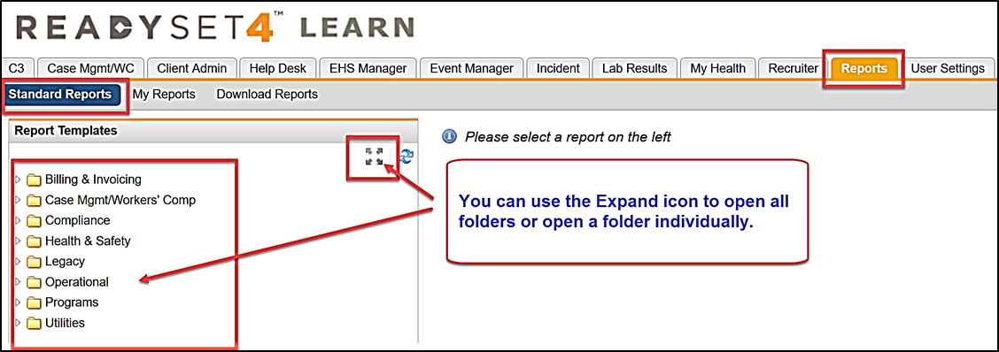
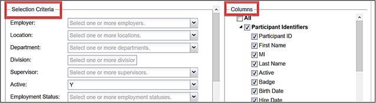

As with any software application, sometimes items are entered, left behind or are never used. It is important to keep your system “clean” to ensure accurate reporting and compliance rates. This document provides you with a list of “housekeeping” reports that will help ensure your system and reporting are in top shape.
Use the checklist below and set up your housekeeping reports using the Schedule Reports option under My Reports. Your housekeeping reports will run automatically at the appropriate time intervals.
You may not have all the reports listed in this document. Reports are specific to modules purchased. For example, if you did not purchase the Injury, Illness and Exposure module, you will not have OSHA Reports in your system.
All reports are found under Reports > Standard Reports. The specific folder location of each report is covered in the appropriate section below.

You can select the desired Selection Criteria and/or Columns to give you the intended report results or use the default criteria that is pre-selected for you.

Below are suggested criteria for setting up your housekeeping reports. This includes filter Selection Criteria, Columns for output, and Auto Scheduling settings. Some sections also include instructions for what to do with the report results.
First Three Months (Bi-Weekly)
Using the three Duplicate Employee Reports help you to determine if your system has duplicate demographic records. We recommend running all three duplicate reports bi-weekly, in this order: Duplicate Employee Records by Name first, then by Corp HR ID and then by Badge. This is important to run often when your participants begin creating user accounts.
How do I find if there are Open or Pending charting forms?
Using the criteria of Test Statusequal to "Not Started" and "Pending" will allow you to see by participant all charting forms that need to be either Submitted or, if not needed, Voided.
Program Overview –Tests – Reports>Standard Reports>Programs>Multiple Programs Summary
Recommendation - Use the criteria listed to find all open or pending charting forms needing to be completed or voided.
Selection Criteria
Active - Select both Y and N
Test Status – Not Started and Pending
Columns
Participant Identifiers
First Name
Last Name
Birth Date
Employment Status
Test Results
Exposure Test Name
Test Status
Appointment Date
Auto Schedule - Common Settings = Once a week
Next Steps
Go to Participant Management.
Search for and open the participant’s record.
Go to Open Orders and complete and submit the form.
OR
Go to Edit Appointments and change the form status to Void.
How do I know if surveys are being completed?
Use this report to verify that your participants are completing their surveys.
Program Overview – Survey - Reports>Standard Reports>Programs>Multiple Programs Summary
Recommendation - Use the criteria listed to see the status of all surveys.
Selection Criteria
Survey – leave blank for a report on all surveys or select one or more for specific survey report.
Survey Status – leave blank for all statuses (Not Started, Incomplete, Complete) or select as needed for your report.
Survey Initialization Date Range – use to find surveys that were “turned on” within a specific date range.
Columns
Participant Identifiers
Participant ID
First Name
Last Name
Birth Date
Employment Status
Survey Results
Survey Status
Survey Creation Date
Survey Name
Auto Schedule - Common Settings = Once a week
Next Steps
If looking at surveys for a program, i.e. Flu, TB or Respirator
Use the Participant ID to create a distribution list of those who have Not Started or are Incomplete.
Use the C3/Mass Email to send reminder emails to the participant.
How do I manage active/inactive records for non-employees (volunteers, contractors, etc.)?
You can use this report by Population Typeand then update the Active/Inactivestatus accordingly, or maintain your non-employee records.
Recommendation - Use the criteria listed to maintain an updated task list.
Selection Criteria
Task Status – Open
Task Active – Y
Follow Up Date Range – Use only End Date, with a past date so that you only get old tasks to review
Columns
Participant Identifiers
First Name
Last Name
Birth Date
Employment Status
General Information - select any other fields that you need for the report
Population Type
Task Details
Task Created By
Task Creation Date
Follow Up Date
Task Description
Task
Assigned To Name
Note - will only print the first 4000 characters
Auto Schedule - Common Settings = Once a week
Next Steps
Open the participant record
Go to Tasks
Update the Due date, Comments or Close/Complete the task
How do I create a report for all user roles (EHS, Recruiter, Help Desk, Event)?
Use this report to maintain those that have access to participant records, e.g. EHS Clinicians that have left the EHS department who no longer need access to all participant records.
Users Accounts and Roles – Reports>Standard Reports>Utilities
Recommendation - Use the criteria listed to find and maintain your software access for those who are EHS Manager, Event, Help Desk or Recruiter users.
Selection Criteria
User Account Active – Y
User Role Name – Use if you want a specific User Role, like Event
Include Participant Role – N
User Account Creation Date Range – only use if you know exactly what creation date range to use
Columns
User Information
User Name
First Name
Last Name
Allow Assignment
Provider Location
Provider Contact
Event
Role Name
User Account History
User Created By
User Created Date
User Last Updated By
User Last Updated Date
Auto Schedule - Common Settings= Once a week
Next Steps
Go to Client Admin>User Maintenance
Open the user’s record and update status (Help Desk, Recruiter, Event or EHS)
How do I find my productivity and time usage for different Visit Types?
Use these reports for Productivity numbers, Wait Time Durations and Visit Types.
Check-In Visit Type Details – Reports>Operational>EHS Visit Statistics
Recommendation - Use the criteria listed to find Visit Type productivity and Wait Time Durations.
Selection Criteria
Employment Status – leave blank
Population Type – leave blank unless you only want a specific group
Visit Type – leave blank unless you only want a specific visit type
Test Completed Date Range – Select an entire month or quarterly or yearly date range
Columns
Participant Identifiers – choose none if you only want numbers and not names
First Name
Last Name
Birthdate
Employment Status
General Information - select any other fields that you need for the report
Department
Population Type
Visit Information
Appointment Date
Clinic Location
Provider Name/Calendar
Check In Time
Start Time Seen by Clinician
Check Out Time
Wait Time Duration
Clinician Time Duration
Appointment Duration
Visit Type
Other Visit Type
Auto Schedule - Common Settings= Once a month
Check-In Visit Type Summary – Average Duration Times(this is a .pdf report)
Recommendation - Use the criteria listed to find a summary of Average Duration time.
Test Completed Date Range – select an entire month, quarterly or yearly date range
Next Steps
Use the results to help with understanding productivity, need for additional help, etc.
How do I know how many new hires have been processed this month?
Use this report for productivity numbers on new hires.
Health Assessment Result Summary – Reports>Standard Reports>Operational
Recommendation - Use the criteria listed to find productivity on new hires.
Selection Criteria
Hire Date Range
Test Last Updated Date Range
Columns
Participant Identifiers
First Name
Last Name
Birth Date
Hire Date
Employment Status
General Information - select any other fields that you need for the report Department
Population Type
Test Results – Select all options that will give you the information you need. Such as, Overall Results will give you the Passed, Did not Pass etc.
Auto Schedule - Common Settings= Once a month
Next Steps
You can use this information for reporting the number of new hires processed and the overall results.
How do I see a Summary Report for the status on all charting forms ordered?
Use this summary .pdf for the number of charting forms order and their status (Complete or Incomplete) and Services Provided or Documentation Only by Provider/Calendar.
Visit Type/Exposure Protocol Summary – Reports>Standard Reports>Operational>EHS Visit Statistics (this is a .pdf report)
Recommendation - Use the criteria listed to see an overview of ordered charting forms and their status and if services were provided or documented.
Appointment Date Range
Next Steps
You can use this information for productivity.
How do I know who is due for their next series in immunizations?
Due for Next Vaccination or Titer
Use this report to find all participants who are due for their next in series vaccination or due for their titer after their final in series.
Recommendation - Use the criteria listed to find those due for their next vaccination by month.
Selection Criteria
Employment Status – Active
Vaccination – leave blank unless you only want a specific type
Next Vaccination Due Date Range
Columns
Participant Identifiers
Participant ID
First Name
Last Name
Birth Date
General Information - select any other fields that you need for the report Department
Population Type
Test Results
Vaccination
Vaccination Administered
Series #
Next Vaccination Date
Auto Schedule - Common Settings= Once a month, you will have to adjust the Next Due Date each month
Next Step
Use the results to create a distribution using the Participant ID, then use the C3/Mass Email to send out reminders for those due next month for their next vaccination.
How do I determine the compliancy for TB, Respirator Fit and Seasonal Flu?
Use this report to find those who are, for example, Due Next Month, Due Current Month, Non-Compliant or Compliant for these programs: TB, Respirator and Seasonal Flu.
Supervisor/Compliance Details – Reports>Standard Reports>Operational>Supervisor If purchased module, data is updated nightly, if not, it’s updated on the weekend.
Recommendation - Use the criteria listed to find compliancy for TB, Respirator and Flu programs.
Selection Criteria
Employment Status – Active, Leave of Absence (if they need to be compliant upon returning to work
Program – leave blank unless you want to specify a program
Compliance – leave blank unless you want to only see a certain status, like Uncompliant
Columns
Participant Identifiers
Participant ID
First Name
Last Name
Employment Status
General Information- select any other fields that you need for the report
Department
Population Type
Refresh Date
Refresh Date – indicates the last date updated
Compliance Results
Program
Compliance
Due Date
Auto Schedule - Common Settings= Once a month
Next Steps
Using the Excel filters, you can filter to those non-compliant, create a distribution list using the participant ID and then use the C3/Mass Email to send a reminder.
How do I find those whose titers came back as not immune?
Use this report to output those with Titer results of Negative or Not Immune for follow up or review.
Recommendation - Use the criteria listed to view your TB compliancy monthly.
Selection Criteria
Employee Status – Active, Leave of Absence (if needed)
Compliance – leave blank unless you only want a specific compliancy
Columns
Compliance
Compliance
Due Date
Test
Participant Identifiers
Participant ID
First Name
Last Name
Employment Status
Birth Date
General Information- select any other fields that you need for the report
Department
Population Type
Supervisor (if sending in the HR Data feed)
Survey Results
Survey Complete Status
Survey Created By
Survey Creation Date
Survey Last Updated By
Survey Last Updated Date
Survey First Answer
TST Read Results
Appointment Date
Performed By
Reason for Test
Prior Documentation
Date Read
Interpretation
Nest TST Date
TB Symptom Results
Appointment Date
Reviewed Date
Symptoms Present
TB Survey Completed Date
Next Due Date
IGRA Results
Appointment Date
Performed By
Reason for Test
Prior Documentation
Date of Service
Results
Next Due Date
Chest X-Ray Results
Appointment Date
Prov Company Name
Chest X-Ray Date
Reading Interpretation Date
Abnormalities
Auto Schedule - Common Settings= Once a month
Next Steps
Use the results to see those with TB compliance or non-compliance. You can create a distribution list using the participant ID and then use the C3/Mass Email to send reminders for those non-compliant.
How do I find my Respirator Compliance?
Use this report for Respirator Compliancy monthly.
Recommendation - Use the criteria listed to view your Respirator compliancy monthly.
Selection Criteria
Employee Status – Active, Leave of Absence (if needed)
Compliance – leave blank unless you only specific compliancy
Columns
Compliance
Compliance
Due Date
Participant Identifiers
Participant ID
First Name
Last Name
Birth Date
Employee Status
General Information- select any other fields that you need for the report
Department
Population Type
Supervisor (if sending in the HR Data feed)
Survey Results
Survey Ever Assigned
Survey Complete Status
Survey Created By
Survey Creation Date
Survey Last Updated By
Survey Last Updated Date
Survey First Answer
Resp Medical Clearance – Test Results
Test Ever Assigned
Test Complete Status
Test Created By
Test Creation Date
Test Completed By
Test Completed Date
Test Last Updated By
Test Last Updated Date
Appointment Date
Provider
Resp Medical Clearance – Evaluation
Reason for Evaluation
Clearance Result
Resp Medical Clearance – Accommodations
Next Evaluation Date
Resp Medical Clearance – Next Due Date
Clearance Expiration Date
Resp Fit – Test Results
RF Test Ever Assigned
Test Completed Status
Test Created By
Test Creation Date
Test Completed By
Test Completed Date
Test Last Updated By
Test Last Updated Date
Appointment Date
Provider
Resp Fit – Performed By
Visit Reason
Visit Other Reason
Performed By
Resp Fit – Next Due Date
Select All Items
Resp Fit – Removed from Testing
Select All Items
Auto Schedule - Common Settings= Once a month
Next Steps
Use the results to create a non-compliant distribution list using the participant ID, then use the C3/Mass Email to send out reminders.
How do I see wellness trends in my employee population and an overview of our Health Risk Survey?
The Biometric reports allow you to see wellness trends in your employee population. The HRA Summary report gives every question/answer and the percentage of participants who answered each question.
How do I find if I have any charting errors for this flu season?
Run this report weekly during your flu season, as it gives you the information needed to keep your reporting accurate.
Flu/NHSN Flu Chart Errors – Reports>Standard Reports>Programs>Seasonal Flu This is a .pdf report
Recommendation - Use the criteria listed to find if there are errors that will affect your flu reporting.
Selection Criteria
Flu Season – defaults to current season
Program Type – select the option that reflects your requirements
Use NHSN Logic – Y
Auto Schedule - Common Settings = Once a week
Next Steps
Using the results, go into each participant record that displays in the report. Look at the Open Orders and/or Results, and review to determine where and why there is an extra charting form. If an extra Flu charting form exists, use the Edit Appointments and void the form. If the flu has been charted twice and displays in the Results tab, then use the Edit Appointments and void the extra entry.
How do I create the NHSN report for this Flu Season?
This report is based on the NHSN Reporting Criteria (all participants that have worked during your flu season for at least one day, whether they are currently active or not).
NHSN Flu Summary – Reports>Standard Reports>Programs>Seasonal Flu This is a .pdf report
Recommendation - Use the criteria listed to view your NHSN reporting numbers.
Selection Criteria
Flu Season – defaults to current season
Program Type – select the option that reflects your requirements
How do I run a report on the Seasonal Flu all active participants?
This report is not based the NHSN reporting criteria, allowing you to report on active participants and displays compliancy.